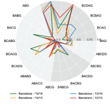

Sports Analytics
Quantitative methods applied to sport — rankings, passing networks, and crowd intelligence.
How should we rank teams and players?
Rankings · Published
A ranking methodology designed to be fair, incentive-compatible, and order-independent.
- Strength of opponents / schedule should be accounted for
- Teams should have an incentive to win to improve their rating
- Sequence of matches on a team's schedule should not affect their rating
Peer-reviewed journal publication
Assessing passing behavior in association soccer
Network Analysis · MIT Sloan Finalist
We analyzed passes in soccer matches using networks and graph theory to identify play styles of players, teams, and coaches.
- Replacing / hiring players with specific skills
- Countering opponents' play strategy
- Hiring new coaches
Finalist — MIT Sloan Sports Analytics Conference Research Paper Competition, 2017

Applying wisdom of crowds to rank college football teams
Crowd Intelligence · Springer
We use a combination of Markov chains and wisdom of crowds to create a new ranking method: Crowd-Ranking.
- When a player with many offers (indicating a skilled player) joins a team, it will improve in ranking
- Applied this method to rank NCAA football teams
Published in Springer journal